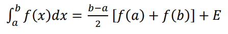
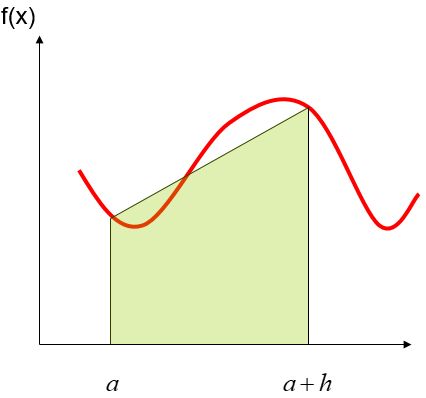
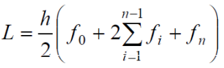
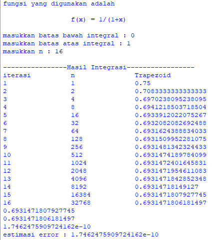

Recursive Trapezoid
Definisi
Metode trapesium merupakan metode integrasi numerik yang didasarkan pada penjumlahan segmen-segmen berbentuk trapesium. Apabila sebuah integral didekati dengan metode trapesium dengan satu segmen saja. Maka dapat dituliskan persamaan sebagai berikut :

Estimasi berdasarkan satu interval

Algoritma Integral Trapezoida
-
Definisikan y = f(x)
-
Tentukan batas bawah (a) dan batas atas (b) integrasi
-
Tentukan jumlah pembagi n
-
Hitung h = (b-a)/2
-
Hitung

Listing Program
Code program python untuk menyelesaikan integrasi numerik menggunakan metode Recursive Trapezoida dapat dibuat dengan listing program sebagai berikut :
def fungsi(x):
y = 1/(1+x)
return y
print("f(x) = 1/(1+x)")
a = float(input("Masukkan batas bawah: "))
b = float(input("Masukkan batas atas: "))
c = int(input("Masukkan n: "))
eror=[]
print("iterasi", "\t","N","\t\t","Trapezoid")
for i in range(0,c):
n=2**i
h=(b-a)/n
xi = a
y=0
for j in range(1,n):
xi+=h
y+=fungsi(xi)
trapezoid = ((h)*(fungsi(a)+(2*y)+fungsi(b)))/2
eror.append(trapezoid)
print(i+1,"\t\t",n,"\t\t",trapezoid)
hasil=(eror[-2]-eror[-1])
print(hasil)
print("Estimasi Eror Adalah : "+str(hasil))
Hasil Running List Program
